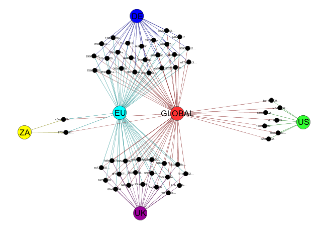

Subcollectives
- Subcollectives
- Overview
- Partitionion Approaches
- Configuring MCollective
- Partitioning for Security
- Testing
- ActiveMQ Filters
Overview
By default all servers are part of a single broadcast domain, if you have an agent on all machines in your network and you send a message directed to machines with that agent they will all get it regardless of filters.
This works well for the common use case but can present problems in the following scenarios:
- You have a very big and busy network. With thousands of machines responding to requests every 10 seconds very large numbers of messages will be created and you might want to partition the traffic.
- You have multiple data centers on different continents, the latency and volume of traffic will be too big. You’d want to duplicate monitoring and management automations in each datacenter but as it’s all one broadcast domain you still see large amount of traffic on the slow link.
- You can’t just run multiple seperate installs because you still wish to retain the central management feature of MCollective.
- Securing a flat network can be problematic. SimpleRPC has a security framework that is aware of users and network topology but the core network doesnt.
In version 1.1.3 we’ve introduced the concept of sub collectives that lets you define broadcast domains and configure a mcollective server to belong to one or many of these domains.
Partitionion Approaches
Determining how to partition your nework can be a very complex subject and requires an understanding of your message flow, where requestors sit and also the topology of your middleware clusters.
Most middleware solutions will only send traffic where they know there exist an interest in this traffic. Therefore if you had an agent on only 10 of 1000 machines only those 10 machines will receive the associated traffic. This is an important distinction to keep in mind.

We’ll be working with a small 52 node collective that you can see above, the collective has machines in many data centers spread over 4 countries. There are 3 ActiveMQ servers connected in a mesh.
Along with each ActiveMQ node is also a Puppet Master, Nagios instance and other shared infrastructure components.
An ideal setup for this network would be:
- MCollective NRPE and Puppetd Agent on each of 52 servers
- Puppet Commander on each of the 3 ActiveMQ locations
- Nagios in each of the locations monitoring the machines in its region
- Regional traffic will be isolated and contained to the region as much as possible
- Systems Administrators and Registration data retain the ability to target the whole collective
The problem with a single flat collective is that each of the 3 Puppet Commanders will get a copy of all the traffic, even traffic they did not request they will simply ignore the wrong traffic. The links between Europe and US will see a large number of messages traveling over them. In a small 52 node traffic this is managable but if each of the 4 locations had thousands of nodes the situation will rapidly become untenable.
It seems natural then to create a number of broadcast domains - subcollectives:
- A global collective that each machines belongs to
- UK, DE, ZA and US collectives that contains just machines in those regions
- An EU collective that has UK, DE and ZA machines
Visually this arrangement might look like the diagram below:

Notice how subcollectives can span broker boundaries - our EU collective has nodes that would connect to both the UK and DE brokers.
We can now configure our Nagios and Puppet Commanders to communicate only to the sub collectives and the traffic for these collectives will be contained regionally.
The graph below shows the impact of doing this, this is the US ActiveMQ instance showing traffic before partitioning and after. You can see even on a small network this can have a big impact.

Configuring MCollective
Configuring the partitioned collective above is fairly simple. We’ll look at one of the DE nodes for reference:
topicprefix = /topic/
collectives = mcollective,de_collective,eu_collective
main_collective = mcollective
The collectives directive tells the node all the collectives it should belong
to and the main_collective instructs Registration where to direct messages
to.
Partitioning for Security
Another possible advantage from subcollectives is security. While the SimpleRPC framework has a security model that is aware of the topology the core network layer does not. Even if you only give someone access to run SimpleRPC requests against some machines they can still use mc ping to discover other nodes on your network.
By creating a subcollective of just their nodes and restricting them on the middleware level to just that collective you can effectively and completely create a secure isolated zone that overlays your exiting networok.
Testing
Testing that it works is pretty simple, first we need a client.cfg that configures your client to talk to all the sub collectives:
topicprefix = /topic/
collectives = mcollective,uk_collective,us_collective,de_collective,eu_collective,us_collective,za_collective
main_collective = mcollective
You can now test with mc ping:
$ mc ping -T us_collective
host1.us.my.net time=200.67 ms
host2.us.my.net time=241.30 ms
host3.us.my.net time=245.24 ms
host4.us.my.net time=275.42 ms
host5.us.my.net time=279.90 ms
host6.us.my.net time=283.61 ms
host7.us.my.net time=370.56 ms
---- ping statistics ----
7 replies max: 370.56 min: 200.67 avg: 270.96
By specifying other collectives in the -T argument you should see the sub collectives and if you do not specify anything you should see all machines.
Clients don’t need to know about all collectives, only the ones they intend to communicate with.
You can discover the list of known collectives and how many nodes are in each using the inventory application:
$ mc inventory --list-collectives
* [ ==================================== ] 52 / 52
Collective Nodes
========== =====
za_collective 2
us_collective 7
uk_collective 19
de_collective 24
eu_collective 45
mcollective 52
Total nodes: 52
ActiveMQ Filters
The above setup should just work in most cases but you might want to go one step further and actively prevent propagation across the network of sub collective traffic.
In your ActiveMQ broker setup you will already have a section defining your network connections, something like:
<networkConnectors>
<networkConnector
name="us-uk"
uri="static:(tcp://stomp1.uk.my.net:6166)"
userName="amq"
password="secret"
duplex="true" />
</networkConnectors>
You can add filters here restricting traffic in this case the US<->UK connection
should never transmit us_collective traffic, so lets restrict that:
<networkConnectors>
<networkConnector
<excludedDestinations>
<topic physicalName="us_collective.>" />
<topic physicalName="uk_collective.>" />
<topic physicalName="de_collective.>" />
<topic physicalName="za_collective.>" />
<topic physicalName="eu_collective.>" />
</excludedDestinations>
name="us-uk"
uri="static:(tcp://stomp1.uk.my.net:6166)"
userName="amq"
password="secret"
duplex="true" />
</networkConnectors>